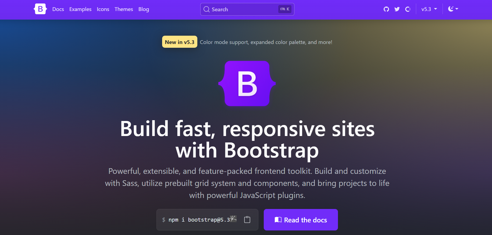
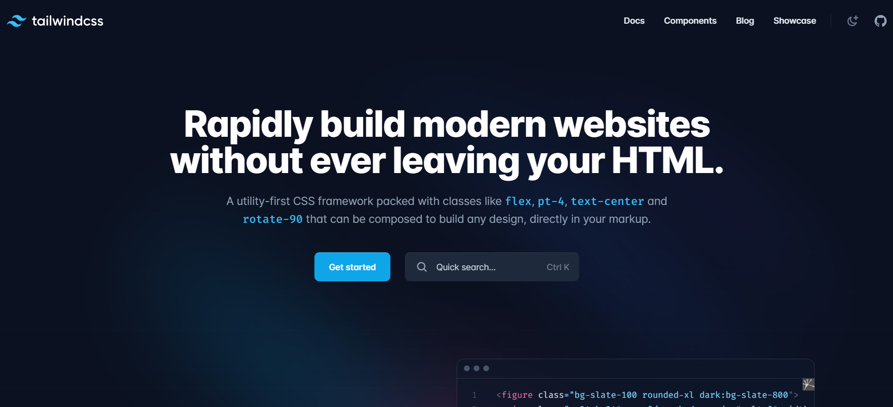
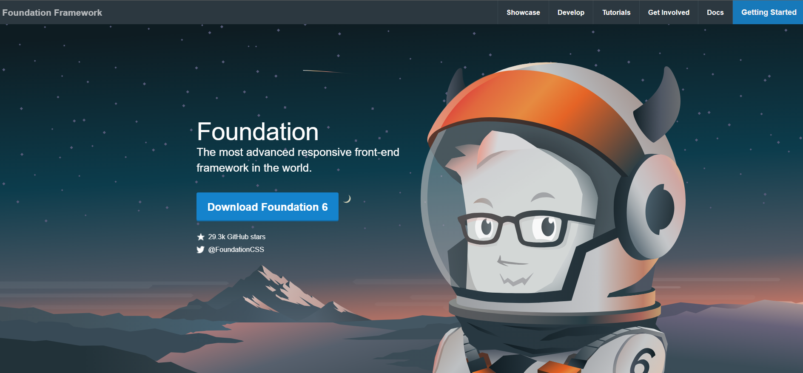
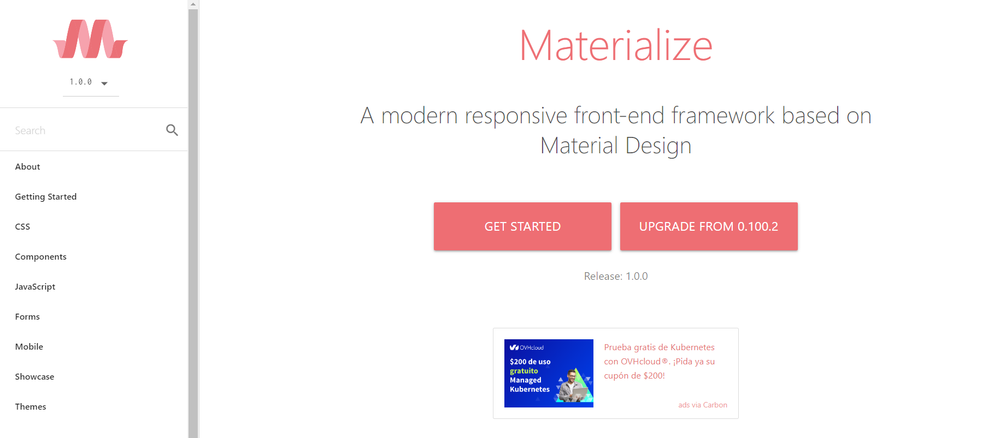
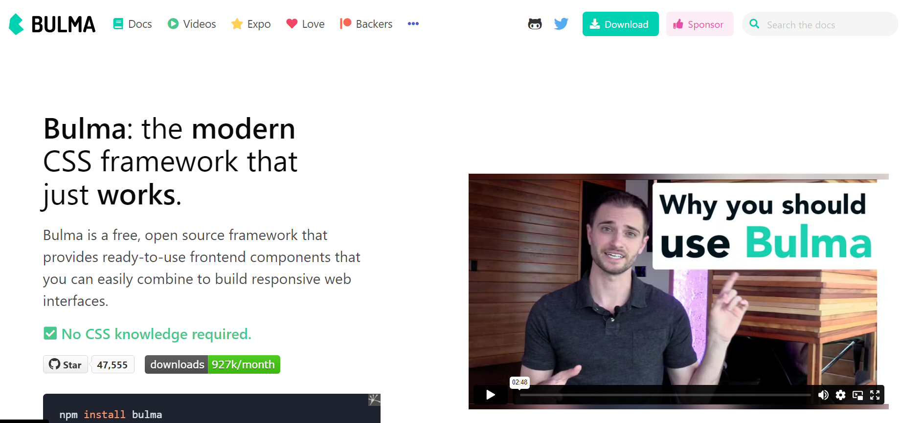

¿Qué es un framework en CSS?
Los frameworks se usan desde hace decadas en la construcción de aplicaciones, un framework es un conjunto de librerias, herramientas, conveciones, buenas prácticas las cuales tienen como objetivo el encapsular las tareas repetitivas en modulo o compoentes genericos los cuales sean faciles de utilizar.
En en caso de la herramienta CSS, un framework CSS es un conjunto de herramientas, hojas de estilos y buenas prácticas que facilitan al diseñador frontend olvidarse de las mismas tareas repetitivas al darle un estilo a cada uno de los elementos HTML que tenga en su página web.
Los frameworks más completos tienen utilidades para que el desarrollador no tenga que trabajar en ningún aspecto génerico del diseño web, por tanto los frameworks CSS tienen herramientas los cuales ayudan en los siguientes aspectos:
- Neutralizar los estilos por afecto que aplican los navegadores. Se trata de la hoja de estilo reset.css que todos los diseñadores profesionales utilizan.
- Manejar correctamente el texto, de forma todos los contenidos se vean exactamente igual en todos los navegadores y que sean adaptables para mejorar su accesibilidad y permitir su acceso en cualquier medio y/o dispositivo.
- Crear cualquier estructura compleja o layout de forma sencilla, con la seguridad de que funciona correctamente en cualquier versión de cualquier navegador.
Frameworks para CSS
-
Boostrap
Boostrap es uno de los frameworks más populares de CSS debido a su característica del diseño responsivo.Este framework fue desarrollado por Twitter y fue lanzado en 2011. Dentro del núcleo incluye HTML,SAAS y Javascript para dotarlo de funcionalidades y componentes interesantes.
Incluye una amplia gama de componentes prediseñados como tipografia, formularios, botones, tablas y navegación. Además viene con complementos de Javascript para una mayor funcionalidad.
 -
TailwindCSS
Este es un framework CSS que ofrece un enfoque diferente que otros como Bootstrap. TailwindCSS en realidad no tiene muchos componentes, sino clases de utilidad que aplicar directamente sobre el CSS.Estos frameworks se llaman también "utility first" y ofrecen estilos CSS atómicos. Aunque también permite crear componentes, lo deja más del lado del desarrollador, que los podrá personalizar a su gusto.
Tailwind CSS tiene la característica de se muy maleable y adaptarse muy bien a lo que el desarrollador necesite. Con el framework puedes hacer builds de clases CSS totalmente personalizadas, que se parezcan o no a las que se ofrecen de manera predeterminada.
 -
Foundation
Este Framework junto con Bootstrap son uno de los más utilizados en la actualidad, Foundation es más sofisticado, asimismo es muy flexible y fácil de personalizar. Este Framework CSS te permite crear aplicaciones y páginas web adaptables a los dispositivos, empresas como Mozilla, HP, Cisco, eBay, Facebook, Adobe, Disney, entre otras, usan Foundation.
A diferencia de otros frameworks CSS ofrece un subset de sus herramientas orientado a la creación de emails, que tienen características de desarrollo distintos que los sitios web. Ofrece un set de herramientas para poder optimizarlo correctamente y construir un build que incluya solamente los componentes que se desean.
 -
Materialize
Materialize es un framework CSS que implementa el tema de diseño "Material Design". Ofrece componetes material listos para usar, que se pueden integrar de una manera cómoda en los sitios web, consiguiendo un diseño guiado por las directrices de aplicaciones y sitios de Google.
Los componentes de Materialize están diseñados pensando en los dispositivos móviles, lo que los hace ideales para el diseño web responsivo. Su adherencia a los principios de Material Design significa que puede crear una estética de diseño consistente y moderna. Materialize incluye una amplia gama de complementos de JavaScript para mayor funcionalidad.
 -
Bulma
Este Framework CSS es open source y esta creado para trabajar con el diseño de cajas flexibles o Flexbox. Bulma es muy ligero, liviano y con soporte para móviles. Cuenta con mas de 200 mil usuarios hasta la actualidad y se encuentra entre los Frameworks más populares del área, junto con Bootstrap y Foundation .
Los componentes de Bulma son CSS puros, es decir, no tiene el set de componentes que requieren Javascript para funcionar. No obstante, tiene un montón de extensiones que sí incluyen componentes de todo tipo, dinámicos y con Javascript, usando varios frameworks, creados por terceros. Es sencillo de usar y de aprender y permite un desarrollo moderno.
